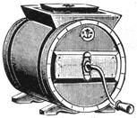

56869 This we consider by far the best small, cheap churn on the market It is made from the best Virginia cedar; it has a double dasher and the crank is locked to the churn with a clamp and thumbscrew, which presents leakage. Lock cannot break. The top is large and dasher easily removed. The hoops are of galvanized iron and will not rust.